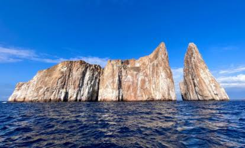
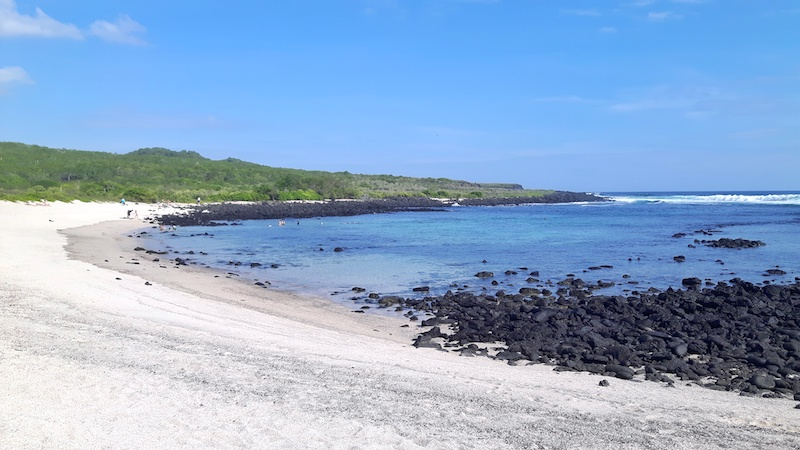
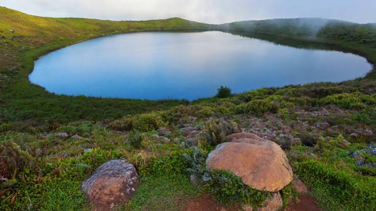
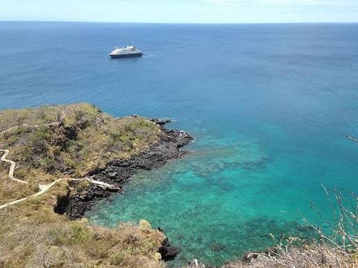
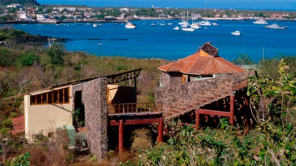
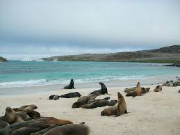

León Dormido (Kicker Rock)
A 45 min en lancha desde Puerto Baquerizo Moreno
Roca volcánica de unos 148 metros de altura, partida en dos por un canal marino angosto.
Actividad: snorkel y buceo entre tiburones de arrecife y rayas
Seis lugares imprescindibles para conocer la isla, desde la costa hasta las tierras altas.

A 45 min en lancha desde Puerto Baquerizo Moreno
Roca volcánica de unos 148 metros de altura, partida en dos por un canal marino angosto.
Actividad: snorkel y buceo entre tiburones de arrecife y rayas

A 2,5 km del centro de Puerto Baquerizo Moreno
Playa de arena coralina donde descansa una gran colonia de lobos marinos e iguanas.
Actividad: caminata corta y fotografía de fauna

Tierras altas, a 19 km del puerto
El único lago de agua dulce permanente del archipiélago, en un volcán extinto.
Actividad: sendero panorámico y observación de aves

Sendero desde el Centro de Interpretación
Mirador natural con vistas a León Dormido, llamado así por sus fragatas.
Actividad: caminata de 30 minutos

Norte de Puerto Baquerizo Moreno
Museo al aire libre sobre la historia geológica y humana de Galápagos.
Actividad: recorrido guiado

A 30 min en lancha desde el puerto
Islote donde anidan piqueros de patas azules y una colonia de lobos marinos.
Actividad: snorkel de baja dificultad